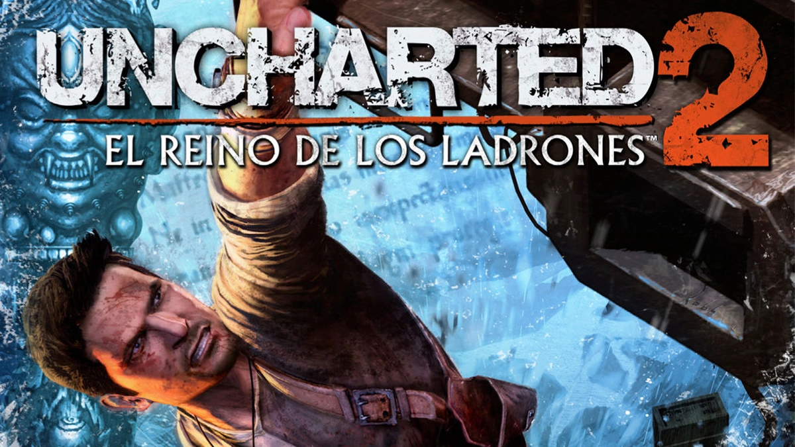
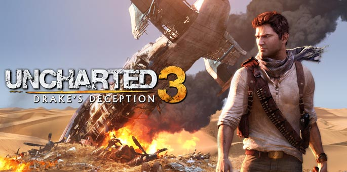

Esta saga de Naughty Dog marca un antes y un después en el género de acción y puzles, siguiendo la historia del protagonista Nathan Drake, cuyo apellido nos puede resultar familiar si conocemos algún explorador inglés del reinado de Isabel I
- Uncharted: Drake's Fortune
- Uncharted 2: El reino de los ladrones 
- Uncharted 3: La traición de Drake 
- Uncharted 4: El desenlace del ladrón


Muy odiado en su release por las espectativas que CD Project Red había dejado en la campaña de marketing, las cuales no se cumplieron, pero han sabido darle la vuelta a la tortilla y arreglar los innumerables bugs y problemas del juego, dejándonos disfrutar de la increíble inmersión que ofrece Nightcity y la historia de V sin que se te cierre el juego. Persom

Aquí esta la Soundtrack del juego, que tiene buena banda sonora
El buque insignia del estudio polaco CD Project Red, y aunque existen dos precuelas, no fueron capaces de cautivar a la gente de la manera que lo consigue la última entrega. En ella sigues la historia del brujo Gerald de Rivia, quien se dedica a cazar monstruos, pero en esta historia se encargará de encontrar a Cirilla, una joven a la que trata como hija y posee poderes sobrenaturales perseguidos por la cacería salvaje

Su precursor continúa la historia de este juego, por lo que si no jugaste ninguno de los dos empezaría por el 2. En él te metes directamente en los comienzos de la industrialización americana y, más importante, el comienzo de la caída del salvaje oeste americano.
Seguimos la historia de Arthur Morgan, miembro de una banda de forajidos que se ganan la vida a base de robar diligencias, bancos, trenes, todo lo que se le ponga por delante. Tanto revuelto acaba atrayendo problemas, pero confío que mantengas el honor alto y acabes viendo a un ciervo.